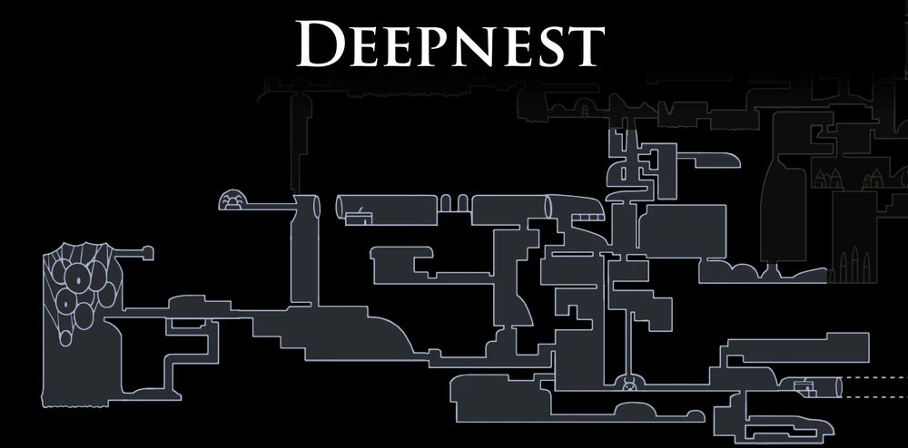

Midwife
Uma criatura aracnídea misteriosa que habita os túneis escuros e conversa com os viajantes nas frestas.

Bretta Presa
Encontrada trancada em uma casa perigosa nas profundezas do covil das aranhas antes de ser resgatada.

Uma criatura aracnídea misteriosa que habita os túneis escuros e conversa com os viajantes nas frestas.
Encontrada trancada em uma casa perigosa nas profundezas do covil das aranhas antes de ser resgatada.

Uma abominação metamorfa que usa a face de outros para atrair presas inocentes para sua câmara mortal.

Uma das Sonhadoras de Hallownest, rainha das aranhas que repousa em seu casulo sagrado.

Fieis mascarados que escondem corpos aracnídeos mortais sob suas capas até o momento do bote.

Pequenas aranhas ágeis que saltam rapidamente pelos túneis escuros do Ninho Profundo.